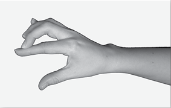

Faith is to believe what we do not see;
and the reward of this faith
is to see what we believe.
-Saint Augustine
Now that you’ve had an opportunity to learn about and practice muscle testing, it’s time to learn the part of the Emotion Code that deals with finding and releasing trapped emotions, both from yourself and from others.
You will find that this process is simple and logical. Once you have been through it a few times, you will become more efficient. With practice, most people can find and release a trapped emotion in less than a minute or two.
First of all, make sure that you (and your partner, if applicable) are comfortable in your environment. It’s best to turn off music and television, as they can be distracting and can have negative or positive energetic effects of their own.
The Emotion Code process can be visualized using the graphic image below.
If you’re working on yourself, you already have permission, so go to the next step.
If you are going to be working with another person, make sure that you get permission to actually test them and get information from their body. You might ask, “Can I have your permission to test you for trapped emotions?” Don’t muscle test this response. Let your partner give you their verbal okay, or at least nod their assent.
Once you both feel comfortable and are relaxed, you can begin.
Before you begin to ask about trapped emotions, your first task is to establish a baseline for testing. Choose the muscle testing method that you are most comfortable using. You need to determine if your subject is testable. If they make a congruent or true statement, are they strong? If they make an incongruent or false statement, are they weak?
In addition, since every person is unique, muscle testing will feel slightly different for each person you test. Getting a definite strong and weak muscle response from your partner will immediately let you know just what this particular person’s muscle test feels like in both strong and weak states.
Perhaps the most obvious and widely used method of establishing a baseline is to simply have your partner state their own name by saying out loud, “My name is _____.”
Once they have made this congruent or true statement, they should test strong.
Now have your partner make a false statement by saying out loud, “My name is _______”, filling in the blank with any name that is not their own. The result should be muscle weakness.
Of course, having your partner state the words yes or no, love or hate, will also work for establishing a baseline.
If Your Partner is Untestable
Remember that part of the reason for establishing a baseline is to determine if the person you are working with is currently testable. If their arm stays strong or weak, no matter what statement they make, they are untestable at present. In this case, you have certain options.
If either you or your partner is somewhat dehydrated it will make testing more difficult, if not impossible.
Mild dehydration is quite common and is easily remedied. Give them a glass of water, drink a glass yourself and try again. If this doesn’t help, your partner likely has a misaligned vertebra in their neck. You can use a surrogate to test them, or you can test them on yourself until they can get an adjustment from their chiropractor.
Some people are untestable because they have a physical impairment or limitation, and surrogate testing is the best option for helping them as well. For more detailed information on surrogate testing, see chapter 8.
Step 3: See if a Trapped Emotion Exists
Have the person being tested make this statement: “I have a trapped emotion that can be released now.”
Test for the response by whatever method you have chosen. Here is a table of the possible methods and possible results.
|
Test |
Yes |
No |
|
All Muscle Tests |
Strength |
Weakness |
|
Sway Test |
Forward |
Back |
If the body’s answer is No, there are three distinct possibilities.
1 The first possibility is that the subject doesn’t have any trapped emotions at all. This is very unlikely, since nearly everyone has them.
2 The second possibility may be that the subject has a trapped emotion, but for some reason their subconscious mind does not want to release it right now. This was the statement: “I have a trapped emotion that can be released now.” The subject may be willing, but their subconscious mind may not be. This situation can change, and the answer may be different later on.
3 The third possibility is that the subject has a Heart-Wall. If this is the case, the body may say that it doesn’t have any trapped emotions, when in reality it does. The Heart-Wall has the effect of making all trapped emotions a little harder to find. To avoid confusion, I am going to devote the entire next chapter to the Heart-Wall. My recommendation is to go ahead and read through this chapter now, even if the answer you got is no, as you will need to know the procedure anyway.
If the answer is yes, you can proceed to the next step.
Step 4: Determine Which Emotion It Is
If the answer is yes, there is a trapped emotion to be released. The next step is to learn more about this emotion. What emotion is this? Is it anger? Is it sorrow? Is it frustration or depression, or some other emotion? When did this emotion become trapped? What event created this?
Through a simple process of deduction, you can narrow it down very quickly.
The “Chart of Emotions” shown on the next page is designed to make your task even easier.
Let’s take a look at this chart. Notice that each row contains specific emotions produced by one of two organs. For example, Row 1 lists the emotions produced by the Heart or Small Intestine. As you may recall, all emotions emanate from the organs, and these two organs produce the same emotions in the body. All the other organs listed on the chart produce the emotions in their respective rows. For our purposes, it doesn’t matter which organ a trapped emotion originally emanated from, as long as we can identify the emotion and release it.
After you’ve been through this process a few times, it will become quite rapid and simple. You will be amazed to see how quickly you can discover for yourself exactly which trapped emotion you are seeking. Remember that the subconscious mind knows all along what the trapped emotion is. The testing you are doing is simply to determine what the subconscious mind already knows.
In fact, the subconscious mind of the person you are working on can somehow “see” the chart of emotions without their ever having seen it physically! It’s best, in fact, if the person you are working on cannot see the emotion list while you are working on them. Otherwise, they may “choose” an emotion to go weak or strong on, thinking they are helping you out, when they are just skewing the testing. If you want to show them the chart of emotions once at the beginning of a session, that’s okay. And even if they have never seen the chart themselves, their subconscious mind will “read” the chart just fine, because their subconscious mind is linked into universal consciousness. Try it and see.
Begin the process of questioning by asking, “Is this trapped emotion listed in Column A?” and then perform the test. If the answer is “Yes”, you might want to ask, “Is this trapped emotion in Column B?” to get a “No” answer and check your accuracy.
You will always only be searching for one trapped emotion at a time, and it can only be in one of the two columns. As a result, only one of these questions can possibly be true.
If the body gives a conflicting response such as telling you that the trapped emotion is in both column A and column B, you are just not getting a good answer. Take a deep breath, get refocused, fill your heart with love for the person you are trying to help, (yourself, if you are working on yourself) say a silent prayer to God for help, believe you can get an accurate response, be grateful that the answer is there to find, and try again. Note that if the exact emotion is not listed on this chart, the subconscious mind of the person you are working on will choose the emotion that is closest to the one that is trapped, and as a result this chart should be all you will need.
Once you have determined which column the trapped emotion is in, you have narrowed the list by half. Now let’s determine which row it’s in.
We could simply start at the top and ask one row at a time, but to speed it up, I have numbered the rows one through six. So, instead of asking about each row, we can eliminate some rows right away.
Ask, “Is the trapped emotion in an odd-numbered row?” If the answer is no, then you know that it must be in row two, four or six. If the answer is yes, you know it is in an odd-numbered row. For the purpose of our explanation here, we will assume that the emotion is in an odd numbered row, either one, three or five. The next thing we must determine is which row the trapped emotion is listed in.
Ask this question: “Is this trapped emotion listed in row one?” If the answer is no, ask the same question about row three, and row five if you need to.
Once you have identified the correct row, since you already have identified the column, you now have narrowed the list of emotions to five possibilities.
Let’s say for example you have determined that the trapped emotion is in column A row 5. Let’s take a look at that particular cell in the table.
Again, the subconscious mind of the person you are testing knows precisely which one of these trapped emotions you are after.
By determining through muscle testing exactly which emotion it is, you bring the knowledge of this trapped emotion to the awareness of your subject’s conscious mind.
This is a necessary and indispensable step towards releasing the emotion. It’s important for the trapped emotion to find expression in order to be released. By identifying it and bringing it to consciousness, we are validating the emotion and bringing a degree of closure to the situation that created it.
We are giving the trapped emotion a voice, and allowing it to be heard, in a sense. If we don’t do this, the trapped emotion will continue to make its presence felt by creating physical pain and/or emotional dysfunction.
In order to find out exactly which emotion has become trapped, all you need to do is ask.
For example, in this case you could begin by asking “Is this trapped emotion blaming?” and then perform a muscle test. The answer will be either yes or no.
Test each emotion one at a time in this same way until you feel confident that you have arrived at the correct emotion. If the very first emotion on the list is giving you a yes answer, you would be wise to check your work by testing the next emotion on the list, which should give you a no answer. Remember, you are testing for one emotion at a time, no more, and only one should be positive at a time.
It is important to be clear about what you are asking. Your intention and the words that you are saying need to be in synch. This is something to be aware of, so that you don’t confuse the subconscious mind.
In addition, cast away any anxiety you may have about this process. Anxiety is a form of fear, and faith and fear cannot coexist!
It’s best to frame things in the form of a statement or a question. To illustrate what I mean, imagine that the trapped emotion is dread. In this case, you could say “This trapped emotion is dread.” and you would get a yes answer.
If you put it in the form of a question and ask, “Is this trapped emotion dread?” you would also get a yes answer.
Both of these ways of asking are equivalent, and each form of phrasing will give you the same body response.
If you just went down the list and stated the word “dread,” without formatting it as either a statement or a question, you may get a confused answer. The body may sway backward or test weak when you just say, “dread”, even in a situation where dread is the precise emotion that is trapped. If you just throw the word out there, the subconscious mind may not be reading you correctly and may simply respond to the negative energy of the word itself.
Once the Trapped Emotion is Identified
Once you have identified the trapped emotion, congratulations! You have learned a very significant part of the Emotion Code. You have now been introduced to an entirely different aspect of your awareness, and you are now learning to tap into your own spirit intelligence, an ability that will serve you well if you continue to develop it.
Sometimes the subconscious mind has more information it wants to push up to the conscious level before being willing to release the emotion. At this point it is a good idea to ask, “Is there more that we need to know about this trapped emotion?” If the answer is no, go ahead and release the emotion. If the answer is yes, dig a little deeper.
Engaging the conscious mind in the process is useful, and can help the subject to grasp the relevance of the emotion that’s about to be released.
Remember that the subconscious mind knows all there is to know about this trapped emotion, including when it first became trapped in the body, who was involved, exactly where this energy is lodged and how it is affecting both the physical body and the mind.
If the subconscious mind wants to have more about the trapped emotion brought to conscious awareness, I recommend that you first try to find out when the it originally became trapped. Sometimes this leads to surprising revelations about the past, and will often uncover the event that created the trapped emotion.
When Did it Become Trapped?
Asking when this particular emotion became trapped is a good place to begin digging deeper. There are many ways of asking deductive questions to get to this information, and if you have a hunch, follow it.
For example, if finding a trapped emotion brings to mind a certain event from the subject‘s life, it probably became trapped because of that event. To find out, simply ask if the event that your partner has in mind is the same event that helped to create the trapped emotion. Your partner does not need to share anything about the experience with you if they don’t wish to. They just need to think about the event for a moment, and then you need to muscle test them after asking if that event helped to create the trapped emotion.
This is one of the nice things about the Emotion Code. People’s private matters can remain private.
They never have to explain or vocalize the circumstance or event that created the trapped emotion. This allows people to work on very private issues that are potentially painful or embarrassing to talk about and still release the emotions that are attached to these events. They can share us much or as little as they choose to.
If no particular event comes to your partner’s mind regarding the emotion, you can use the process of deduction to determine when the trapped emotion occurred. Finding out when it occurred often helps in uncovering why it occurred.
In the same way that we divided the Chart of Emotions into columns and rows to facilitate faster searching, you can divide a lifetime into different spans to more easily locate the year a trapped emotion originated.
There is no right or wrong way to determine when an emotion became trapped. You simply ask, and narrow it down to a certain year or event. One way to do it is to simply divide your subject’s span of years in two, and see if the trapped emotion occurred before the midpoint of their life, or after. If they are forty years old, for example, you might ask, “Did this emotion become trapped before age twenty?” If the answer is yes, you can narrow it down further in this same way.
You might ask, “Did this emotion become trapped within the first ten years of your (my) life?”
If the answer is yes, you can break it down even further, by asking:
“Did this emotion become trapped in the first five years of your (my) life?”
If the answer is yes, you can continue to refine the answer by asking if the emotion became trapped in the first year, second year, third year and so on.
I have found that the body is usually accurate within a year plus or minus when identifying the time frame of a trapped emotion in this way. In other words, if you get the answer that a certain trapped emotion occurred at age 17, it could actually have been at age 16 or age 18, but it probably was at age 17.
At the moment a trapped emotion is being created your particular age is apparently not all that important. The mindbody doesn’t correlate trapped emotions with chronological age so much as it correlates them with specific events, occurrences or circumstances.
Let’s say an emotional event that occurred a month after you graduated from college resulted in a trapped emotion. You happened to be 23 years old at the time. Muscle testing may produce an answer of 22, 23 or 24 years old for when this trapped emotion occurred, which would be within the usual year, plus or minus. If you were to ask if this trapped emotion occurred before graduation, or after graduation, you would get a more precise answer. In this way, you would be able to arrive at a more accurate time of occurrence.
It’s good practice to periodically ask, “Do we need to know more about this emotion?” When you’ve brought enough information about the trapped emotion to consciousness, the mindbody will let you know you’re done, and it can be released.
Once you’ve determined exactly when the emotion occurred, your subject will probably know what event helped create it and what it was about.
Sometimes, determining the time frame when a trapped emotion occurred can result in a more profound understanding of what happened, as well as how the trapped emotion is affecting the mindbody. Here is an account of a woman who developed a trapped emotion during a stressful time, which led to migraine headaches later on.
Nancy’s Migraines
I was always getting very bad headaches and bad neck aches, and I had even started getting cortisone shots in the back of my head and neck. When you said that I might have a trapped emotion that was causing this, I had no clue what you were talking about. You started asking my body questions like something happened to me in 1994. You narrowed it down to an emotion of hopelessness in the month of January, 1994.
Then I started thinking, ‘Oh my gosh, this is the time Shawn was born when I went into labor at 33 weeks.’ He was in the Hospital for 21 days with a collapsed lung. After you treated me I feel so much better, and I thank you for that.
What a miracle. I said that you knew I had all this block in the back of my head because we almost lost Shawn during this time. But if you see him, you will know he is truly my miracle.
- Nancy P.
Whose Emotion Was This?
Sometimes it can help to understand who was involved in the creation of a trapped emotion. For example, let’s say you are hot on the trail of a trapped emotion that occurred during your high school years. The emotion is bitterness. But you can’t remember anything that might have created this emotion.
You might ask, “Was this my bitterness?” If the answer is yes, you can ask if the bitterness was toward a person. If it was, you might ask if it was a male? Was it a female? Was it a friend? Was it a family member? Was it your brother? Was it Joe? Use the process of deduction to narrow down the possibilities.
If it was your own bitterness but it was not about a person, you can ask if the bitterness was about a situation. Then narrow your scope of questions to figure out what the situation was, when it occurred, etc.
Emotions rarely occur in a vacuum. They usually involve another person, but can be about a situation regarding home, school, work, finances, relationships, etc.
If you test to see if it was your bitterness and the answer is no, then ask if it was someone else’s bitterness that you absorbed from them. We do take on other people’s feelings sometimes, and that energy can become our extra baggage. A mother can be feeling bitterness and her child might pick up some of that energy, or a friend might be going through a difficult episode, and your empathy for her situation may create a trapped emotion for you. In my experience, if an emotion was absorbed from another person, the subconscious mind will always want that fact to be brought to consciousness before the trapped emotion is released.
If you silence your mind for a moment or two, and especially if you ask God for His help to figure it out, you will. Trust me on this. Remember, “Ask, and ye shall receive; knock, and it shall be opened unto you.”
Where is the Emotion Lodged?
Another fascinating thing to determine is exactly where the trapped emotion is lodged. Remember that a trapped emotion will always have a physical location in the body. Figuring out where a trapped emotion is located is optional, but locating it can be fun as well as very enlightening.
Trapped emotions can lodge anywhere in the body, regardless of what organ they originated from.
Remember that a trapped emotion is a ball of energy, usually ranging in size from an orange to a cantaloupe. To determine the exact location of this energy ball, use the process of deduction.
Ask, “Is this trapped emotion stuck in the right side of the body?” If not, ask, “Is this trapped emotion stuck in the left side of the body?” Each time you ask, perform the muscle test of your choice to see what the body’s answer is.
If both of these answers are negative, ask, “Is this trapped emotion stuck in the midline of the body?”
Next, ask if the trapped emotion is above, below or at the waistline. Before long you will have identified a general area where the emotional energy is lodged.
You can get more specific by simply continuing to query the body. It’s easy, and gets even easier with practice.
Don’t discount your own ability to discern where the emotion is trapped. If you simply listen to your intuition for a moment about the location of the trapped emotion, an impression may come into your mind. Check that location first, and you will be surprised at how often it is correct, saving you time and effort.
Once you have found the location of the trapped emotion, think about any symptoms that may be present in that part of the body. If there is pain in the area of the trapped emotion, it may suddenly disappear or dissipate when it is released.
Remembering the Trapped Emotion
Sometimes, you will still not have any idea what event led to the creation of a trapped emotion. Quite often, trapped emotions can be created by circumstances that are quickly forgotten.
Say for example, that one day everything just seemed to go wrong. Perhaps you went to dinner before seeing a show, and the service was terrible. You knew you were going to be late for the show, and you became upset. When the bill finally arrived, your credit card was maxed out, and you chose to feel very angry or humiliated, or both. We can become pretty upset at times when things aren’t going our way. The intense emotions we may be feeling on an occasion like this may leave us with a trapped emotion or two. But a year later, you may be hard pressed to remember this event, particularly if you chose not to dwell on the bad experience. If a number of years have gone by, the trapped emotion will still be there, but consciously recalling the event may now become very difficult.
Sometimes trapped emotions are created during an event that was transitory in nature, and the event itself is lost forever to your conscious memory.
Even if you don’t remember immediately what a given trapped emotion was about, my experience has been that approximately 50% of the time you will remember within the next couple of days. Typically, the following day or during the night, you will be doing something totally unrelated, when the event will suddenly pop into your mind. You will remember what happened, because your subconscious mind was searching, working overtime trying to figure it out and dredge it up out of your memory bank.
There is no limit to how many times you can ask, “Do we need to know more about this trapped emotion?” Once you get a no answer, you know everything you need to know about it and you can release it.
Whether or not you actually remember what occurred and what created your trapped emotion is not critical to the releasing of the emotional energy. It can be interesting to figure it out, and there may even be some insight to be gained by doing so, but identifying which emotion is trapped and bringing it to conscious awareness is all that is necessary before releasing it. The next step will tell you exactly how to release it.
Releasing an Emotion from Yourself
To release a trapped emotion from yourself, place your magnet between your eyebrows on your skin. While you continue to breathe (don’t hold your breath) roll or slide the magnet up the middle of your forehead, over the top of your head, and down the back of your neck as far as you can comfortably reach, three times.
You can run your magnet over any part of the Governing Meridian with the intention of releasing the trapped energy that is in your body. If you have “big hair” and you can’t go over your hair without messing it up, just use your magnet on your forehead as far as you can. It’s that easy. Just remember to do it three times, and to stay focused on your intention to let the trapped emotion go.
Releasing an Emotion from Another Person
To release a trapped emotion from another person, place your magnet on their back at the base of their neck. Instruct your partner to continue to breathe in and out while you roll or slide the magnet from the base of their neck to their low back or just beyond, three times. Each time you reach the bottom of a stroke, lift the magnet off their back and replace it at the base of the neck.
Each stroke transfers magnetic energy into the Governing Meridian. This magnetic energy magnifies and carries your intention into all the other meridians, filling the body with that intention and thought. The result is that within three strokes, the trapped emotion is released, forever. It’s just that simple.
Confirming the Release
To confirm that the emotion has been released, simply ask, “Did (I) we successfully release that trapped emotion?” The answer should be yes. If so, you are done with that trapped emotion, and you can now check to see if there is another trapped emotion to be released, if you wish.
If your test shows that the emotion was not released, simply reapply the magnetic energy three times as before. But this time, have a little more love in your heart for who you are working on, whether yourself or your partner, believe that you can release this emotion, and allow yourself to feel gratitude to God that it is being released.
Remember that all things are accomplished by faith and belief, and if you have a little faith, you’ll see great things happen.
Remember the words of Jesus:
“…verily I say unto you, If ye have faith as a grain of mustard seed, ye shall say unto this mountain, Remove hence to yonder place; and it shall remove; and nothing shall be impossible unto you.” (Matt: 17-20)
It’s Permanent
One of the most beautiful aspects of the Emotion Code is that trapped emotions, once released, are gone forever. In all the years that we have worked with patients in practice and at seminars, we have never seen a trapped emotion that was released ever return.
On the other hand, it is possible for people to have more than one occurrence of a particular emotion lodged in their body. In this case, you might release the same emotion from your subject several times, but each emotion will be a separate and distinct trapped energy, usually resulting from different emotional events in their past. It’s also possible for a person to have several distinctly different emotions that all became trapped from the same event.
If you are struggling with a specific problem in your life, it’s important to determine if trapped emotions may be playing an unseen role.
You might suspect that you have a trapped emotion, but it doesn’t show up when you ask the general question, “Do I have a trapped emotion that I can release now?” Trapped emotions sometimes need to be addressed more directly for them to unveil themselves.
Here are some examples of common problems, along with ways to ask. This list could go on and on, but this will give you an idea of how you can ask about your own specific problems.
“Do I have a trapped emotion that is preventing me from losing weight?”
“Is there a trapped emotion that is causing inflammation in my tissues?”
“Do I have a trapped emotion that is blocking me from making more money?”
“Is there a trapped emotion that is preventing me from selling more widgets?”
“Is there a trapped emotion that is contributing to my (back, neck, shoulder, knee, etc.) pain?
“Do I have a trapped emotion that is causing me to be (depressed, short-tempered, angry, etc.)?”
“Do I have a trapped emotion about my (husband, wife, son, daughter, boss, etc.)?”
“Is there a trapped emotion that is interfering with the achievement of my goals?”
“Is there a trapped emotion that is making it more difficult for me to quit (drinking, smoking, using drugs, pornography, etc.)?”
“Do I have a trapped emotion about (name specific event)?”
If the answer to a direct question like these is yes, the subconscious mind has identified the emotion. You would then continue by asking which column this trapped emotion is in, following the process as I have outlined previously in this chapter, and as shown on the flowchart on page 222.
Remember that there may be more than one emotion contributing to any given issue. In addition, trapped emotions will often come off in layers. If you release a trapped emotion that has to do with a specific issue today, another emotion about that same issue may not show up until later. If you are attempting to overcome a specific issue, it’s a good idea to recheck that issue for trapped emotions from time to time.
It’s not unusual to find several trapped emotions lodged together in a particular area of the body, a phenomenon I refer to as “Nesting.” You will sometimes find a significant level of discomfort in your subject when nesting is going on. Having multiple trapped emotions in one area seems to create a greater level of tissue distortion and pain. It is interesting to observe that as nesting trapped emotions are discovered and released using the Emotion Code, the level of discomfort often diminishes noticeably as each one is released. For stories that illustrate nesting, see “Jean’s Painful Ovary” on page 73, and “Jack’s Tennis Elbow” on page 75.
As the mindbody processes the emotion that has been released, symptoms of this processing can arise. Once a trapped emotion has been brought to the awareness of the conscious mind, and has been released magnetically as described, at that point a healing process begins.
During this healing process a person may experience echoes of the emotion that has been released. It is not unusual for people to feel a bit emotionally up and down during this period of time.
The body will usually be willing to release at least one emotion before wanting to take time out to process. On the other hand, sometimes the body will release one emotion after another, and do the processing for a group of emotions simultaneously. Remember to trust the wisdom of the body implicitly, and never force it, but be gentle with the body, allowing it the time it needs to process and heal.
If after releasing a trapped emotion, the body will not release another, you can ask when it will be ready to release the next one, by asking “Will I (you) be able to release another trapped emotion _______?” filling in the blank with words like “in 10 minutes”, “in 2 hours”, “this afternoon”, “tomorrow”, and so on. If processing is called for, it typically lasts from a few hours to a few days.
Be Aware of Processing Ups and Downs
It’s very important to let the person you are working with know that they may experience some slight emotional ups and downs from processing the release of a trapped emotion. If you let them know about this possibility in advance, and it actually occurs, it is expected. If some noticeable processing does occur, such as crying or vivid dreams, and you haven’t told them that they might experience it, they may end up thinking that the release of their trapped emotion has made them worse, not better.
Processing takes place every time a trapped emotion is released, but noticeable ups and downs occur about 30% of the time. Often the mind-body is capable of processing the release of a trapped emotion without breaking stride; it is a multi-tasking computer, after all. But sometimes, it just takes some time for the mind-body to heal from a trapped emotion, and to get a handle on this new state of affairs.
While a person is processing the release of one or more trapped emotions, they are not restricted in any way from their normal activities.
Sometimes you will find that a trapped emotion did not occur at any age from birth onward. Trapped emotions can also occur in the womb. In this case, you can ask:
“Did this emotion become trapped in the womb?”
“Did this emotion become trapped during the 1st trimester?”
“Did this emotion become trapped during the 2nd trimester?”
“Did this emotion become trapped during the 3rd trimester?”
In my experience, prenatal trapped emotions usually develop during the third trimester, and will usually be emotions that the subject’s mother was experiencing.
In other words, let’s say a woman is in her second or third trimester of pregnancy, and is experiencing the emotion of grief. Her whole being is vibrating with this emotional energy, and the infant begins to resonate with that emotion. As a result, the fetus may get a trapped emotion from its mother.
I have never seen an occasion where a trapped emotion was created by the fetus itself, but whether the emotion was generated by the fetus or by the mother’s body doesn’t matter. It can be released the same way in either case, by applying the magnet three times to the Governing Meridian as previously described.
In the same way that you can inherit your eye color or the shape of your nose from your father and mother and other ancestors, you can also inherit trapped emotions from them. An inherited trapped emotion is different from a prenatal trapped emotion, or from any other type of trapped emotion.
In the case of an inherited emotion, you actually receive the energy of the emotion at the moment of conception from the sperm or the egg.
When the sperm and egg unite, one of them is already carrying an extra passenger in the form of some emotional energy. The now-fertilized egg begins the process of division, and everything that exists in the original egg is now duplicated. As the fertilized egg divides this excess emotional energy is duplicated as well.
You can certainly ask “Is there an inherited emotion that we can release now?” to uncover the existence of this type of trapped energy. But most often, you will stumble across inherited emotions while you are on the trail of what you think is a regular trapped emotion.
How Inherited Emotions are Uncovered
Our experience is that the mind-body will lead you to the correct column and row that an inherited emotion is in, but will not give you a yes answer on any of the five emotions that are listed in that cell, unless and until you preface the emotion with the word inherited.
For example, say you have identified that the trapped emotion you are trying to release is in column B row 2. You have tested each of the emotions listed in that cell, but the response is no for each emotion. If this occurs, simply ask “Is this an inherited trapped emotion?” If you receive a yes answer in response, simply go through the emotions again by asking “Is this inherited _________?” filling in the blank with each emotion listed until you find the correct inherited emotion.
Once you have identified the inherited emotion, you might want to determine which parent the subject received this trapped emotion from. To go even deeper, you might ask if this inherited emotion came from a grandparent or a great grandparent, etc. Typically, however, you will find that most inherited trapped emotions will have come from a father, mother or grandparents.
My daughter Natalie was working on me remotely a couple of years ago and found an inherited trapped emotion of hopelessness. When she determined that this emotion dated back 22 generations to an Irish grandmother of mine on my father’s side, Natalie suddenly felt the presence of this very woman by her side; she could feel how desperate she was to have this emotion released from her posterity, and at the same time she could feel how grateful she was that this work was being done. I knew the moment this energy was released, because a background feeling of hopelessness that had been there all my life was suddenly gone. I never really knew that it was there, until the moment it was gone!
When an inherited trapped emotion is released, it is released from all the ancestors that passed the emotional energy down the line, no matter how many generations back that may be. This is truly one of the most powerful aspects of The Emotion Code! I recommend that you hold a clear intention to release the inherited trapped emotion from every soul that is holding this energy, whether living or dead, since it is possible that the person you are working on may have passed this energy to their children. When you are finished, you can muscle test to see if the emotion was released from not only the subject, but from anyone else who may have inherited this energy.
Releasing an Inherited Emotion from Yourself
To release an inherited trapped emotion from yourself, place your magnet between your eyebrows on your skin and follow the procedure already described for releasing a non-inherited trapped emotion. The difference is simply that while you continue to breathe (don’t hold your breath) roll or slide the magnet up the middle of your forehead, over the top of your head, and down the back of your neck as far as you can comfortably reach, TEN times instead of only three times.
Releasing an Inherited Emotion from Another
To release an inherited trapped emotion from another person, place your magnet on their back at the base of their neck. Instruct your partner to continue to breathe in and out while you roll or slide the magnet from the base of their neck to their low back or just beyond, TEN times instead of three times. Each time you reach the bottom of a stroke, lift the magnet off their back and replace it at the base of the neck.
Pre-Conception Trapped Emotions
On rare occasions, I have discovered trapped emotions that actually occurred prior to conception, and I am not referring to inherited emotions. I believe that prior to conception we existed as conscious entities, but we were without physical bodies. Instead, we existed as spirit-beings. We could think for ourselves, and we were aware of our coming journey to earth.
Most pre-conception trapped emotions are about our impending sojourn on earth.
It seems that sometimes, even though we may rejoice in our opportunity to come to the earth, we become frightened or dismayed by the journey ahead of us. To leave that place of beauty and love, to come here to this earth, with all its trouble, violence, and war might make even the stoutest heart wilt. Sometimes pre-conception trapped emotions have to do with some sort of grief or sadness about leaving our heavenly home. But I have also seen cases where trapped emotions were created by relationship problems from long ago. Preconception trapped emotions are somewhat unusual, but I have seen them, and you probably will, too. And although they are unusual and can often be quite powerful, they are released like other trapped emotions, with three swipes of the magnet, once they are brought to conscious awareness.
As you use the Emotion Code to help yourself and others, you will find joy in seeing the progress that a person can make as they shed their burdens one by one. You will see lives changed, people healed, and hearts connected.
Don’t give up! It takes some time to become proficient at the Emotion Code. Trust in your own healing abilities. It is well worth the effort. Believe and be grateful to God that you can do this, and the outcome will be your reward for believing.
In the next chapter you will learn how trapped emotions can create a wall around your heart, blocking your ability to give and receive love.
For your convenience, if you’d like to download a fully printable copy of the two following pages, simply visit my website at:
1 David R. Hawkins, Power vs. Force: the hidden determinants of human behavior, (Carlsbad, CA: Hay House, Inc. 1995), 59.
2 Ibid, 34.
Finger Positioning for Basic Arm Test


The Governing Meridian


The Governing Meridian
Follow this flowchart and the Chart of Emotions on the right to release trapped emotions.